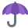

الشدّة
الدرس 1 من 3 — القراءة
الشدّةعلامة (ـّ) توضع فوق الحرف، ومعناها أن الحرف مكتوب مرّة واحدة لكنّه يُنطق مرّتين: الأولى ساكنة والثانية متحرّكة.
| نكتب | ننطق |
|---|---|
| رَبَّ | رَبْ + بَ |
| أُمِّي | أُمْ + مي |
| قِطٌّ | قِطْ + طٌ |
اضغط واستمع
كلمات فيها شدّة

قِطٌّ
دُبٌّ
بَطَّةٌ
تُفَّاحَةٌ

مِظَلَّةٌ
جَدَّةٌ
أُطبّق
1استمع إلى الكلمة: هل في آخرها شدّة؟
2أيّ حرف عليه شدّة في «بَطَّةٌ»؟
3أيّ حرف عليه شدّة في «دُبٌّ»؟
4اختر الكلمة التي فيها شدّة:
5كيف نقرأ «أُمِّي»؟
6استمع إلى الكلمة، ثمّ اختر الصورة:
7اختر الصورة التي في اسمها شدّة:
إجابات صحيحة من أول محاولة:
أتمرّن أكثر
أستمع، ثمّ أكتب ما أسمع:
أستمع، ثمّ أكتب ما أسمع:
✓ أنهيتَ هذا الدرس
الرسوم: Twemoji (CC-BY 4.0) وFluent Emoji من Microsoft (MIT). الأصوات: صوت عربي اصطناعي.